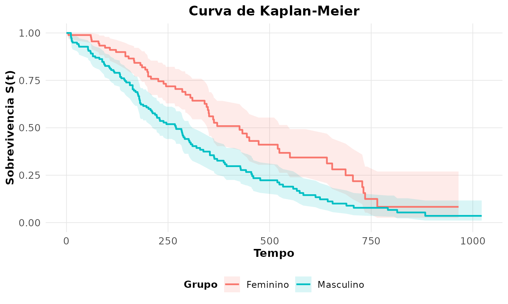

A análise de sobrevivência estuda o tempo até a ocorrência de
um evento (morte, falha, recidiva). Seu traço distintivo é a
censura: para alguns indivíduos, o estudo termina antes
do evento, e só se sabe que o tempo de falha excede o
observado. Ignorar essa informação parcial enviesaria as estimativas
(Colosimo and Giolo 2006; Klein and Moeschberger
2003). Usamos survival::lung: 228 pacientes com
câncer de pulmão avançado, com tempo de seguimento e estado vital.
dados <- survival::lung
dados$sexo <- factor(dados$sex, 1:2, c("Masculino", "Feminino"))
dados$evento <- dados$status == 2 # 1 = óbito; 0 = censuraConceitos fundamentais
Seja o tempo até o evento. As três funções que o descrevem são
a sobrevivência , o risco instantâneo (hazard) e o risco acumulado . Conhecida uma delas, obtêm-se as demais.
Estimador de Kaplan-Meier
Na presença de censura, é estimada não-parametricamente pelo produto limite de Kaplan-Meier, onde é o número de eventos e o número em risco em cada tempo de falha :
km <- rnp_kaplan_meier(dados$time, dados$evento, grupo = dados$sexo)
km$mediana
#> # A tibble: 2 × 6
#> grupo n eventos mediana ic_inf ic_sup
#> <chr> <int> <int> <dbl> <dbl> <dbl>
#> 1 Masculino 138 112 270 212 310
#> 2 Feminino 90 53 426 348 550A sobrevida mediana — tempo em que — é de 270 dias para homens e 426 dias para mulheres, uma diferença expressiva. A curva torna isso visível:

Comparando grupos: teste log-rank
O teste log-rank confronta o número de eventos observados e esperados em cada grupo sob de curvas iguais, acumulando as diferenças sobre os tempos de falha:
rnp_log_rank(dados$time, dados$evento, dados$sexo)
#> # A tibble: 1 × 4
#> estatistica gl p_valor metodo
#> <dbl> <int> <dbl> <chr>
#> 1 10.3 1 0.0013 log-rankCom e , rejeita-se a igualdade: a sobrevivência das mulheres é significativamente maior.
Modelo de Cox de riscos proporcionais
O modelo de Cox relaciona o risco às covariáveis sem especificar a forma de (o risco basal), sendo por isso semiparamétrico:
O efeito de cada covariável é a razão de riscos (hazard ratio), (Therneau and Grambsch 2000).
fit <- rnp_cox(Surv(time, status) ~ age + sexo + ph.ecog, data = dados)
fit$coeficientes
#> # A tibble: 3 × 8
#> termo coef hazard_ratio erro_padrao z p_valor ic_inf ic_sup
#> <chr> <dbl> <dbl> <dbl> <dbl> <dbl> <dbl> <dbl>
#> 1 age 0.0111 1.01 0.0093 1.19 0.232 0.993 1.03
#> 2 sexoFeminino -0.553 0.575 0.168 -3.29 0.001 0.414 0.799
#> 3 ph.ecog 0.464 1.59 0.114 4.08 0 1.27 1.99Interpretação: ser do sexo feminino multiplica o risco por
(redução de 42%,
);
cada ponto na escala de incapacidade ph.ecog multiplica o
risco por
();
a idade não é significativa
().
A concordância mede o poder discriminante do
modelo:
fit$modelo
#> # A tibble: 1 × 5
#> concordancia aic n eventos p_razao_veross
#> <dbl> <dbl> <int> <dbl> <dbl>
#> 1 0.637 1464. 227 164 0A concordância de indica capacidade preditiva moderada (0,5 = acaso).
Verificando o pressuposto de proporcionalidade
O modelo de Cox supõe que as razões de risco são constantes no tempo. O teste baseado nos resíduos de Schoenfeld avalia isso:
rnp_cox_diagnosticos(fit)$teste
#> # A tibble: 4 × 5
#> termo chisq gl p_valor interpretacao
#> <chr> <dbl> <dbl> <dbl> <chr>
#> 1 age 0.188 1 0.665 PH nao rejeitada
#> 2 sexo 2.31 1 0.129 PH nao rejeitada
#> 3 ph.ecog 2.05 1 0.152 PH nao rejeitada
#> 4 GLOBAL 4.46 3 0.216 PH nao rejeitadaNenhuma covariável viola o pressuposto (global ): o modelo de Cox é adequado aqui.
Modelo paramétrico (AFT)
Quando se quer modelar diretamente o tempo, os modelos de tempo de falha acelerado assumem uma distribuição para (Weibull, lognormal, …):
rnp_sobrevivencia_parametrica(Surv(time, status) ~ age + sexo, dados,
dist = "weibull")$coeficientes
#> # A tibble: 4 × 5
#> termo estimativa erro_padrao z p_valor
#> <chr> <dbl> <dbl> <dbl> <dbl>
#> 1 (Intercept) 6.66 0.448 14.9 0
#> 2 age -0.0123 0.007 -1.76 0.0781
#> 3 sexoFeminino 0.382 0.128 3.00 0.0027
#> 4 Log(scale) -0.282 0.0619 -4.56 0O coeficiente positivo de sexoFeminino
(,
)
indica que ser mulher acelera (prolonga) o tempo de sobrevida —
coerente com o achado de Cox. A escolha entre AFT e Cox e entre
distribuições pode ser guiada pelo AIC.
Síntese
| Objetivo | Função | Conceito |
|---|---|---|
| Estimar | rnp_kaplan_meier |
produto limite |
| Visualizar | rnp_grafico_sobrevivencia |
curva com IC |
| Comparar grupos | rnp_log_rank |
observados vs esperados |
| Risco acumulado | rnp_nelson_aalen |
|
| Efeito de covariáveis | rnp_cox |
razão de riscos |
| Validar Cox | rnp_cox_diagnosticos |
resíduos de Schoenfeld |
| Modelo paramétrico | rnp_sobrevivencia_parametrica |
AFT |
A censura é o que distingue esta área: toda a maquinaria existe para extrair informação de observações incompletas.